Manicure Inspiration
The more you practice these steps, your nails can look just like these. Practice makes perfect!
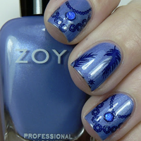 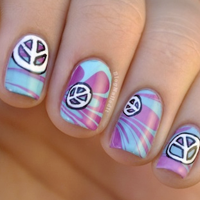 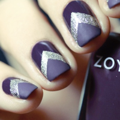 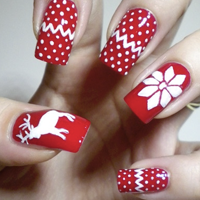 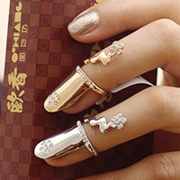 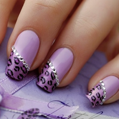 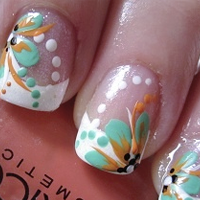 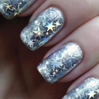 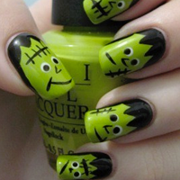 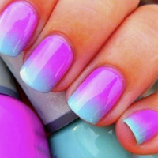 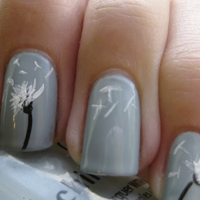 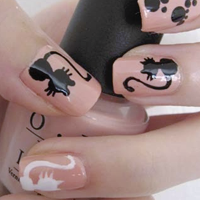The more you practice these steps, your nails can look just like these. Practice makes perfect!
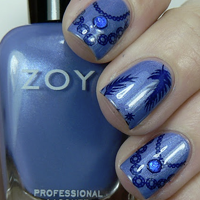 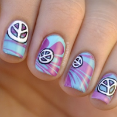 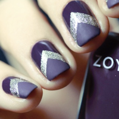 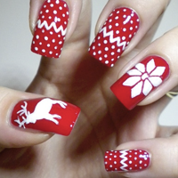 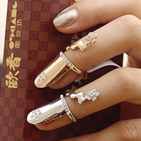 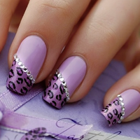 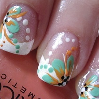 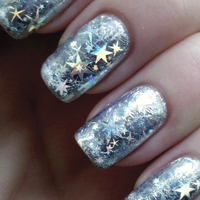 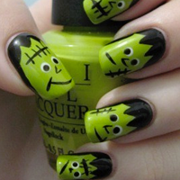 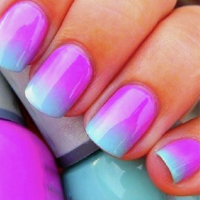 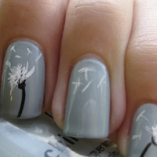 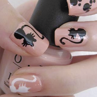